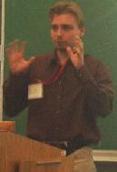

|

Nice to meet you!
My name is Gerald Friedland. I am currently working at the International Computer Science Institute, an independent non-profit laboratory closely affiliated with the University of California, Berkeley where I am currently leading the Speaker Diarization research.
My research interests focus on intelligent multimedia applications,
especially technology that extracts meaning (semantic) from data
created for human sensory perception. Having a background in computer
vision, speech research, a bit human computer interation, and a bit
software engineering, I am currently trying to shift my focus towards
multimodal machine learning. Besides helping to build Appscio.com as a principal scientist and member of the technical advisory board, I am also co-organizing the IEEE International Symposium on Multimedia and the IEEE International Conference on Semantic Computing
as a Program Co-Chair. If you wish a physical meeting with me contact
me at the address below. Otherwise feel free to browse through my
virtual existence.
These are my coordinates:
International Computer Science Institute
1947 Center Street, Suite 600
CA 94704-1198 Berkeley
Room: 515 (5th floor)
Phone: +1 (510) 666-2987
Email: fractor (at) icsi.berkeley.edu
|
|